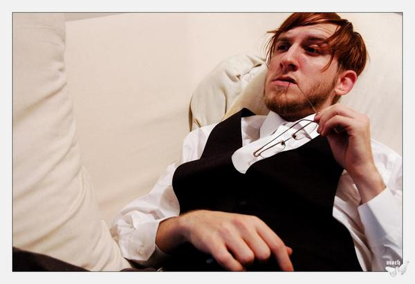

Dec. 28, 2010, 10 p.m. at Wonder Bar
(Comments)

Come celebrate the Birthday of one of the beautiful and hard working
Music Ecology promotors and founders Polina Volchek tonight
with...
KiloWatts:
James Watts boasts an
impressive and expansive discography of styles and collaborations
that dates back to the early 90s demoscene and has steadily
progressed forward towards making some of the most influential
electronic albums to date. Having worked with some of the greatest
minds i...n the industry, including Bluetech, Bil Bless, Tanner
Ross, Peter Van Ewijk, and labels Native State Records, Mothership,
Dependent, and Thoughtless Music, he has greeted the challenges in
the music business with inspired optimism, smiles, and an infectious
easy going attitude. In 2009, he played an extensive tour schedule
in cities all over the US and Canada. In the same year we saw his
6th solo album ‘Undercurrent’, the debut Voodeux album
‘The Paranormal’, and the 2nd KiloWatts & Vanek
album ‘Focus & Flow’. It’s fair to say the man
lives and breathes electronic music.
His work embraces the
bulk of electronic genres, including breaks, IDM, techno, and
downtempo. His albums on Artificial Music Machine that are full of
visionary dimensions, fusing together a dexterous knowledge of sound
synthesis, deep emotional articulation, and solid melodic intuition.
Peppered throughout these monumental statements are releases with
class labels such as Somnia, Thoughtless Music, and his own outlet,
KiloWatts Music, that celebrate his adept technical expertise, often
bringing a whirlwind of digital wizardry in the form of glitches and
edits. The list of projects and collaborations continues to grow,
but some of the highlights are: Skeetaz, with breakbeat cohort Bil
Bless brings hard-hitting digital glitched-out psychedelic funk. His
collaboration with singer Peter Van Ewijk is a mystical ride with
vocals and guitar, nested atop edgy electronica. With Tanner Ross,
an eerie style of dark techno is born under the name Voodeux for
Dirtybird’s techno sublabel Mothership. Fellow Philadelphian
MC Amagine delivers consciousness-driven motifs in their digital
glitch-hop project called Super Galactic Expansive.
http://www.kilowattsmusic.com/
http://www.myspace.com/kilowatts
http://www.facebook.com/pages/KiloWatts/104988830570
dj steppo ( lovewavemusic/bassic, boston)
With over ten years experience in the game, and a serious love
for all things music, DJ Steppo has rocked crowds from New England
to Miami and San Francisco, and has played along such acts as Pinch,
Joe Nice, Pendulum, Adam F, Mayhem, Reid Speed and many more. He
owns his own label, Lovewave Music - focusing on the futuristic
sounds of dubstep, house, and techno, and just released his third
single, 'Torture Taxi' alongside Prism with a cut on the A side.
http://lovewavemusic.com/
http://myspace.com/steppo401
Steady Knock (Braintrust, MA)
Riding
on the storm from north of boston, steady knock (Andrew Thibodeau
and Jonny Christensen) is a soundclash of the emerging genres
glitch-hop and dubstep that sends listeners on an unforgettable
melodic experience. Taking influences from hiphop, rap, dubstep,
glitch and electro, steadyknock produces unique music that can be
listened to whether youre raving it up late night or straight coolin
with your friends. They have over 25 remixes and original tracks.
Motivated by the love and growth of contemporary music, Andrew and
Jonny devote almost all of their lives to bring you these
incredible, filthy, and bass heavy songs. So, tune in to be updated
on weekly song releases to keep that steady-knock-strut in your
stride.
http://soundcloud.com/steady-knock
http://soundcloud.com/tibz-1
Professorpious (Music Ecology / Lost in Bass /
SMGU)
Professorpious has been a fixture on the Boston
electronic music scene since throwing his first underground event in
2001. He received his break after opening for ediT at Bassic and has
since then been invited to play in Boston, Connecticut, New York,
Vermont and Nevada. With events like Burning Man and Defcon on his
resume, Professorpious has shared a stage with national acts like
Heyoka, Bakir, SugarPill and Cacheflow. A founding member of SMGU as
well as a resident of Music Ecology club night, he also hosts a
weekly internet radio show called Lost in Bass on
http://glitch.fm/
alongside dsub and Stickem
10 PM, 21+, $5
Visuals
by VJ Shmeejay
For this and future events visit
http://www.facebook.com/MusicEcology
http://www.musicecologyboston.com/
Promotional assistance by
Forbidden Bass
Crew
http://www.facebook.com/group.php?gid=365770374790
LostinSound Crew
http://www.lostinsound.org/
Wonder Bar
186 Harvard Avenue
Allston, MA
02134-2806
Get Directions
Archive
2014
2013
- December (1)
- November (4)
- October (2)
- September (5)
- August (2)
- July (4)
- June (4)
- May (3)
- April (5)
- March (5)
- February (6)
- January (4)
2012
- December (6)
- November (6)
- October (6)
- September (4)
- August (5)
- July (6)
- June (5)
- May (6)
- April (5)
- March (5)
- February (5)
- January (6)
2011
- December (5)
- November (5)
- October (4)
- September (5)
- August (3)
- July (2)
- June (4)
- May (5)
- April (4)
- March (6)
- February (5)
- January (4)
2010
- December (5)
- November (5)
- October (5)
- September (4)
- August (2)
- July (4)
- June (6)
- May (5)
- April (4)
- March (5)
- February (5)
- January (1)
Locations
- Brighton Music Hall (1)
- Good Life (1)
- Machine Nightclub (13)
- Middle East Corner (1)
- Middle East Upstairs (4)
- Phoenix Landing (1)
- Royale Boston (2)
- South Shore Music Hall (1)
- T.T. the Bear's Place (1)
- The Sinclair (1)
- The Stone Church (1)
- Wonder Bar (190)
- Wonder Bar - DOWNSTAIRS (2)
Connect
Comments